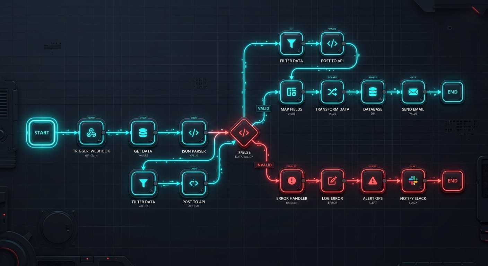
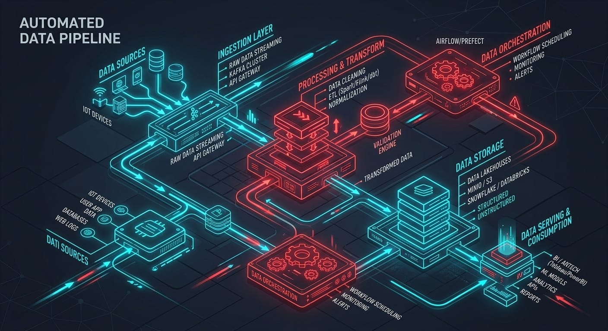

We bridge the gap between data and action. Redmatic architecturally integrates your reputation management and operational workflows into a unified, high-velocity engine.

Realized within 14 months of deployment (McKinsey, 2025).
Lead conversion boost from automated loops (HubSpot, 2026).
Reduction in downtime via automated heartbeat telemetry.
We conduct a forensic audit of your operational footprint to isolate where your current process is stalling. This includes sentiment analysis on your existing reviews and a complete mapping of your manual data bottlenecks.
Your custom architecture is built into our framework. Every workflow is hard-coded with explicit documentation, ensuring you always own the internal logic of your business operations.
We implement high-fidelity heartbeat monitoring across your stack. If an API connection breaks, our diagnostic engine pings the team immediately. Your systems are effectively self-healing.
Your online footprint is your most valuable asset. We build automated loops that filter client sentiment, push requests to satisfied customers, and flag negative feedback for human intervention.
View Diagnostic Tools →Efficiency is an architectural decision. We integrate your CRM, billing, and communication suites into a synchronized data stream, allowing your staff to focus on strategy instead of manual entry.
Explore Efficiency Lab →